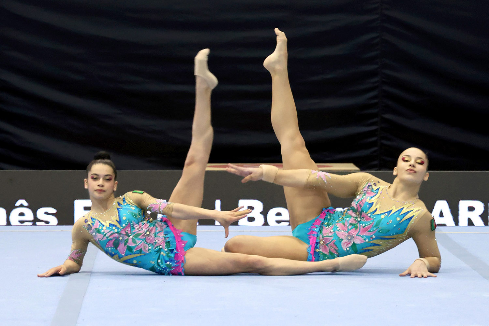

Regras da Ginástica Acrobática
Na entrada do praticável, todos os pares e grupos devem dirigir-se para o local onde vão iniciar o seu exercício onde realizam uma apresentação simples, rápida e sem coreografia para o público e para os juízes.
Na saída do praticável, aplica-se a mesma regra, onde vão dirigir-se para a zona do "kiss and cry", onde aguarda-se pela pontuação do exercício.
Nas provas de Ginástica Acrobática cada painel de juízes é constituído por:
- 1 Chefe de Painel de Juízes
- 1 Juíz de Dificuldade
- 4 Juízes de Execução
- 4 Juízes de Artística
- 1 Juíz de Linha (opcional)
- 1 Juíz de Tempo (opcional)

Na Ginástica Acrobática existem 5 categorias:
- Par feminino (Base e Volante ambos femininos), 2 indivíduos
- Par misto (Base masculina, Volante feminina), 2 indivíduos
- Par masculino (Base e Volante ambos masculinos), 2 indivíduos
- Grupo Masculino (Quarteto Masculino, 1 Base, 2 Intermédios, 1 Volante)
- Grupo Feminino (Trio Feminino, 1 Base, 1 Intermédio e 1 Volante)
Ser Base ou ser Volante depende da altura, género e peso. Os mais velhos, fortes e altos (E especialmente, homens, se possível) são as bases, enquanto os mais baixos, mais leves e mais novos (e especialmente, mulheres, se possível) são os volantes.
Base é responsável por sustentar a figura acrobática, seja nos elementos estáticos ou dinâmicos. Requer força, equilíbrio, estabilidade e liderança.
O Volante executa os elementos acrobáticos, com apoio da base e/ou intermédio. Requer equilíbrio, leveza, flexibilidade, agilidade e coragem.
O intermédio cumpre a função de ambos. Requer versatilidade nas características, exigindo principalmente força e flexibilidade
Os ginastas são avaliados em 3 vertentes:
- Dificuldade: Consiste na soma da dificuldade dos elementos realizados pelos ginastas
- Execução: Consiste ao desempenho técnico dos elementos apresentados. Algo que irá reduzir a avaliação disto será, por exemplo:
- Artística: Relacionada com a estrutura coreográfica do exercício. A criatividade e originalidade são valorizadas e deve existir sincronismo.
Ausência de extensão dos pés, joelhos ou pernas dobradas, falta de estabilidade nas receções dos saltos mortais ou falta de manutenção dos 3 segundos exigidos nas posições estáticas.
A nota final é determinada pela soma das 3 notas anteriores.
Existem vários escalões na ginástica acrobática:
- Infantis (6-12 anos)
- Iniciados (10-16 anos)
- Juvenis (11-16 anos)
- Juniores (12-18 anos)
- Elite Júnior (13-19 anos)
- Sénior (12 anos-)
- Seniores Elite (15 anos-)
Todos os exercícios tem que ser coreografados e com acompanhamento musical, mesmo que antes não era permitido a utilização de músicas com letra, só instrumentais ou músicas que não tinham letra (Mas agora é permitido em apenas um exercício).
Cada exercício tem a duração máxima de 2 minutos e 2 minutos e 30 segundos, consoante o escalão. Por cada segundo excedido, é aplicável uma dedução de 1 ponto.
É proibido que os ginastas ostentem no seu fato de competição apenas a bandeira nacional nas competições em que estão a representar o clubo, e se desejarem, podem ter a bandeira do clube e a bandeira nacional, mas sempre cada uma com as dimensões mínimas (30cm quadrados), sendo que qualquer infração a esta regra implica penalizações sobre vestário inadequado.